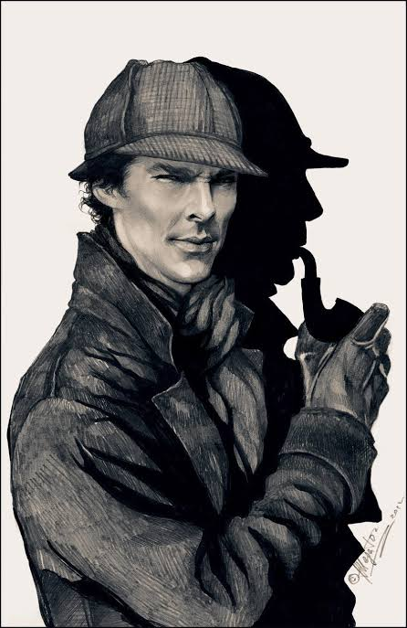

Sherlock Holmes é um dos mais famosos personagens dos romances policiais da literatura britânica. O infalível detetive foi criado em 1887 e ainda hoje é um dos mais atraentes personagens dos romances policiais. Sherlock continua despertando a curiosidade dos leitores, tanto que seu endereça fictício – 221B, Baker Street – abriga hoje o museu do ilustre detetive.
Sherlock Holmes foi criado pelo médico e escritor britânico Sir Arthur Conan Doyle (1859-1930) nascido em Edimburgo na Escócia.
